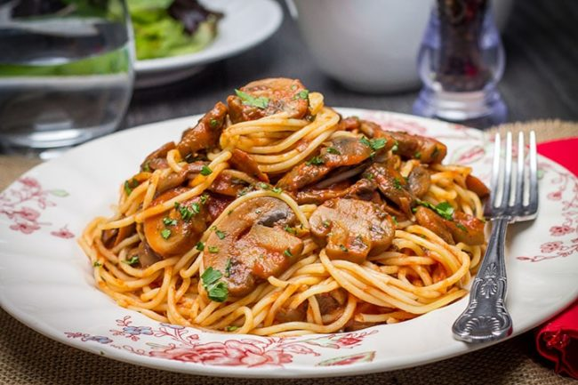

Spaghetti with tomato sauce and sauteed mushrooms
Description
In this recipe I will show you the way I was taught by my mother to do spaghetti with tomato sauce and sauteed mushrooms.
The recipe will be separated in 2 main parts: 1. how to do the tomato sauce 2. how to do the mushrooms. The spaghetti used will be the one you can buy in any store, so just follow the instructions in the package to do them.
This dish is for 3 portions, and if you want to do more portions, just consider 2 tomatoes by each new portion.
Ingredients
Steps
Tomato Sauce
Sauteed Mushrooms
Now you just have to combine your spaghetti, tomato sauce and sauteed mushrooms and the dish is ready! You can add a little bit of parmesane cheese if you like it.